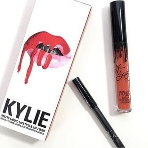
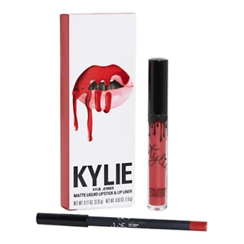

haha

The #KylieCosmetics Lip Kit is your secret weapon to create the perfect 'Kylie Lip.' Each Lip Kit comes with a Matte Liquid Lipstick and matching Lip Liner.

Bare is a nude pinky beige. The Kylie Cosmetics Bare Velvet Liquid Lipstick Lip Kit is your secret weapon to create the perfect 'Kylie Lip.' Each Lip Kit comes with a Velvet Liquid Lipstick and matching Lip Liner.
Mary Jo K is a true blue red. Each Lip Kit contains: 1 Matte Liquid Lipstick (0.11 oz./ 3.25 g) 1 Pencil Lip Liner (net wt./ poids net .03 oz/ 1.0g)